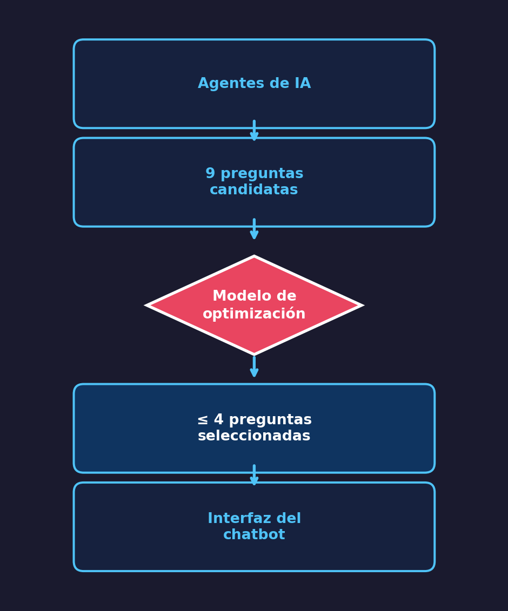
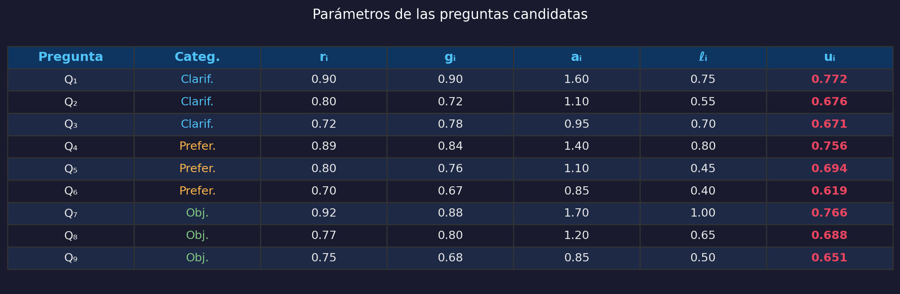
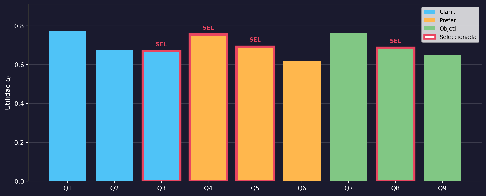
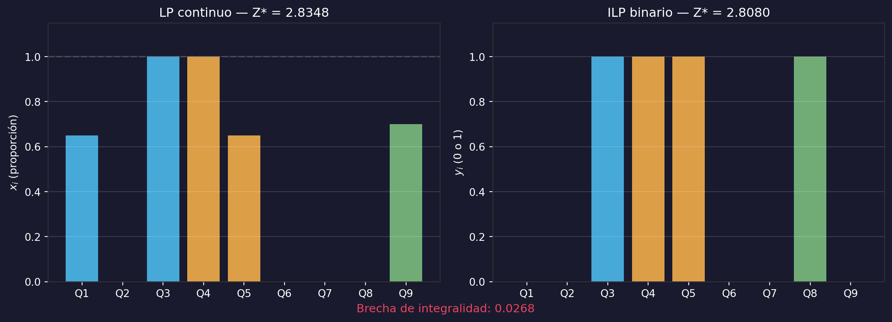
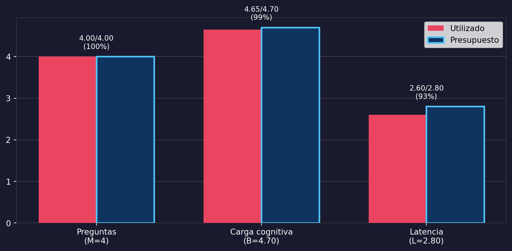
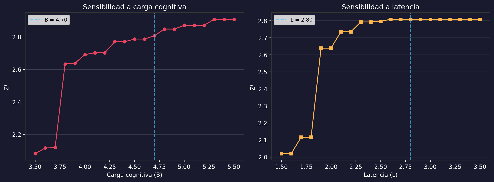

Modelo de Programación Lineal — Parte I
Escuela Politécnica Nacional
2026-11-01
Tesis: Agentic Conversational User Modeling Framework for Question Recommendation
Desafío central
Seleccionar un subconjunto limitado de preguntas que maximice la relevancia y la ganancia de información, respetando restricciones de:
Los CRS (Conversational Recommender Systems) interactúan dinámicamente con usuarios mediante preguntas y respuestas [1].
Problema concreto:
Un chatbot debe presentar como máximo 4 preguntas de entre 9 candidatas al inicio de la conversación.

Las 9 preguntas se clasifican en 3 categorías:
| Clarificación (\(C\)) | Preferencias (\(P\)) | Objetivos (\(O\)) | |
|---|---|---|---|
| Precisan el contenido | Personalizan la exploración | Profundizan el conocimiento | |
| Preguntas | \(Q_1, Q_2, Q_3\) | \(Q_4, Q_5, Q_6\) | \(Q_7, Q_8, Q_9\) |
Cada pregunta \(i\) tiene 4 indicadores: relevancia \(r_i\), ganancia de información \(g_i\), carga cognitiva \(a_i\), latencia \(\ell_i\).

\[u_i = 0{,}55\,r_i + 0{,}45\,g_i - 0{,}08\,a_i\]
| Parámetro | Valor |
|---|---|
| Máximo de preguntas (\(M\)) | 4 |
| Presupuesto carga cognitiva (\(B\)) | 4,70 |
| Presupuesto latencia (\(L\)) | 2,80 |
| Cobertura mínima/categoría (\(m_k\)) | 0,70 |
Decisiones
Función objetivo: \[\max\; Z = \sum_{i=1}^{9} u_i \, x_i = \sum_{i=1}^{9} \bigl(0{,}55\,r_i + 0{,}45\,g_i - 0{,}08\,a_i\bigr)\,x_i\]
Restricciones:
\[\sum_{i=1}^{9} x_i \leq 4 \quad \text{(máximo de preguntas)}\]
\[\sum_{i=1}^{9} a_i\,x_i \leq 4{,}70 \quad \text{(carga cognitiva)}\]
\[\sum_{i=1}^{9} \ell_i\,x_i \leq 2{,}80 \quad \text{(latencia)}\]
Cobertura mínima por categoría:
\[\sum_{i \in I_k} x_i \geq 0{,}70 \qquad \forall\, k \in \{C, P, O\}\]
Dominio: \[0 \leq x_i \leq 1 \qquad \forall\, i \in I\]
Propiedad clave
El modelo es completamente lineal: función objetivo y restricciones son lineales en \(x_i\). Se resuelve de forma exacta con el método Simplex o HiGHS.
Para seleccionar preguntas concretas (sí/no), se introduce:
\[y_i \in \{0, 1\}, \quad y_i = \begin{cases} 1 & \text{si se recomienda } Q_i \\ 0 & \text{en caso contrario} \end{cases}\]
Se sustituye \(x_i \to y_i\) en todas las ecuaciones.
LP (relajación)
scipy.optimize.linprogILP (binario)
PuLP + CBC solverimport numpy as np
r = np.array([0.90, 0.80, 0.72, 0.89, 0.80, 0.70, 0.92, 0.77, 0.75])
g = np.array([0.90, 0.72, 0.78, 0.84, 0.76, 0.67, 0.88, 0.80, 0.68])
a = np.array([1.60, 1.10, 0.95, 1.40, 1.10, 0.85, 1.70, 1.20, 0.85])
preguntas = ['Q1','Q2','Q3','Q4','Q5','Q6','Q7','Q8','Q9']
categorias = ['Clarif.','Clarif.','Clarif.',
'Prefer.','Prefer.','Prefer.',
'Objeti.','Objeti.','Objeti.']
# Función de utilidad
u = 0.55 * r + 0.45 * g - 0.08 * a
for i in range(9):
print(f'{preguntas[i]} ({categorias[i]}): u = {u[i]:.4f}')Q1 (Clarif.): u = 0.7720
Q2 (Clarif.): u = 0.6760
Q3 (Clarif.): u = 0.6710
Q4 (Prefer.): u = 0.7555
Q5 (Prefer.): u = 0.6940
Q6 (Prefer.): u = 0.6185
Q7 (Objeti.): u = 0.7660
Q8 (Objeti.): u = 0.6875
Q9 (Objeti.): u = 0.6505scipy.optimize.linprogfrom scipy.optimize import linprog
n, l_vec = 9, np.array([0.75,0.55,0.70,0.80,0.45,0.40,1.00,0.65,0.50])
A_ub = [np.ones(n), a, l_vec,
np.array([-1,-1,-1,0,0,0,0,0,0]),
np.array([0,0,0,-1,-1,-1,0,0,0]),
np.array([0,0,0,0,0,0,-1,-1,-1])]
b_ub = [4, 4.70, 2.80, -0.70, -0.70, -0.70]
res_lp = linprog(-u, A_ub=A_ub, b_ub=b_ub,
bounds=[(0,1)]*n, method='highs')
print(f'Utilidad óptima LP: Z* = {-res_lp.fun:.4f}')
for i in range(n):
if res_lp.x[i] > 0.001:
print(f' {preguntas[i]}: x = {res_lp.x[i]:.4f}')Utilidad óptima LP: Z* = 2.8348
Q1: x = 0.6500
Q3: x = 1.0000
Q4: x = 1.0000
Q5: x = 0.6500
Q9: x = 0.7000from pulp import (LpMaximize, LpProblem, LpVariable,
lpSum, value, LpBinary)
prob = LpProblem('Seleccion', LpMaximize)
y = [LpVariable(f'y_{i+1}', cat=LpBinary) for i in range(n)]
prob += lpSum(u[i]*y[i] for i in range(n))
prob += lpSum(y[i] for i in range(n)) <= 4
prob += lpSum(a[i]*y[i] for i in range(n)) <= 4.70
prob += lpSum(l_vec[i]*y[i] for i in range(n)) <= 2.80
prob += lpSum(y[i] for i in range(3)) >= 0.70
prob += lpSum(y[i] for i in range(3,6)) >= 0.70
prob += lpSum(y[i] for i in range(6,9)) >= 0.70
prob.solve()
sel = [i for i in range(n) if int(value(y[i])) == 1]
print(f'Utilidad óptima ILP: Z* = {value(prob.objective):.4f}')
print(f'Seleccionadas: {[preguntas[i] for i in sel]}')
print(f'Carga: {sum(a[i] for i in sel):.2f}/4.70')
print(f'Latencia: {sum(l_vec[i] for i in sel):.2f}/2.80')Utilidad óptima ILP: Z* = 2.8080
Seleccionadas: ['Q3', 'Q4', 'Q5', 'Q8']
Carga: 4.65/4.70
Latencia: 2.60/2.80import matplotlib.pyplot as plt
colores_cat = {'Clarif.': '#4fc3f7', 'Prefer.': '#ffb74d', 'Objeti.': '#81c784'}
colores = [colores_cat[c] for c in categorias]
bordes = ['#e94560' if i in sel else '#ffffff00' for i in range(n)]
anchos = [3.5 if i in sel else 0 for i in range(n)]
fig, ax = plt.subplots(figsize=(11, 4.5))
bars = ax.bar(preguntas, u, color=colores, edgecolor=bordes,
linewidth=anchos, zorder=3)
for i in sel:
ax.annotate('SEL', (i, u[i]), textcoords='offset points',
xytext=(0, 8), ha='center', fontsize=9,
fontweight='bold', color='#e94560')
from matplotlib.patches import Patch
leg = [Patch(facecolor=c, label=k) for k, c in colores_cat.items()]
leg.append(Patch(facecolor='white', edgecolor='#e94560',
linewidth=2.5, label='Seleccionada'))
ax.legend(handles=leg, loc='upper right', fontsize=9)
ax.set_ylabel('Utilidad $u_i$', fontsize=11)
ax.set_ylim(0, max(u)*1.18)
ax.set_facecolor('#1a1a2e')
fig.set_facecolor('#1a1a2e')
ax.tick_params(colors='white')
ax.yaxis.label.set_color('white')
ax.xaxis.label.set_color('white')
for spine in ax.spines.values():
spine.set_color('#333')
ax.grid(axis='y', alpha=0.15, color='white')
plt.tight_layout()
plt.show()
fig, axes = plt.subplots(1, 2, figsize=(12, 4.5))
for ax_i in axes:
ax_i.set_facecolor('#1a1a2e')
ax_i.tick_params(colors='white')
ax_i.yaxis.label.set_color('white')
for spine in ax_i.spines.values():
spine.set_color('#333')
ax_i.grid(axis='y', alpha=0.15, color='white')
axes[0].bar(preguntas, res_lp.x, color=colores, alpha=0.85)
axes[0].set_ylabel('$x_i$ (proporción)')
axes[0].set_title(f'LP continuo — Z* = {-res_lp.fun:.4f}',
color='white', fontsize=12)
axes[0].set_ylim(0, 1.15)
axes[0].axhline(y=1, color='gray', linestyle='--', alpha=0.3)
y_vals = [int(value(y[i])) for i in range(n)]
axes[1].bar(preguntas, y_vals, color=colores, alpha=0.85)
axes[1].set_ylabel('$y_i$ (0 o 1)')
axes[1].set_title(f'ILP binario — Z* = {value(prob.objective):.4f}',
color='white', fontsize=12)
axes[1].set_ylim(0, 1.15)
fig.set_facecolor('#1a1a2e')
brecha = -res_lp.fun - value(prob.objective)
fig.suptitle(f'Brecha de integralidad: {brecha:.4f}',
color='#e94560', fontsize=11, y=0.02)
plt.tight_layout()
plt.show()
fig, ax = plt.subplots(figsize=(9, 4.5))
ax.set_facecolor('#1a1a2e')
fig.set_facecolor('#1a1a2e')
recursos = ['Preguntas\n(M=4)', 'Carga cognitiva\n(B=4.70)', 'Latencia\n(L=2.80)']
usados = [len(sel), sum(a[i] for i in sel), sum(l_vec[i] for i in sel)]
presupuestos = [4, 4.70, 2.80]
pct = [us/pr*100 for us, pr in zip(usados, presupuestos)]
x_pos = np.arange(len(recursos))
width = 0.35
bars1 = ax.bar(x_pos - width/2, usados, width, label='Utilizado',
color='#e94560', zorder=3)
bars2 = ax.bar(x_pos + width/2, presupuestos, width, label='Presupuesto',
color='#0f3460', edgecolor='#4fc3f7', linewidth=2, zorder=3)
for i, (us_val, pr) in enumerate(zip(usados, presupuestos)):
holgura = pr - us_val
ax.annotate(f'{us_val:.2f}/{pr:.2f}\n({pct[i]:.0f}%)',
(i, max(us_val, pr)), textcoords='offset points',
xytext=(0, 10), ha='center', fontsize=9, color='white')
ax.set_xticks(x_pos)
ax.set_xticklabels(recursos, color='white')
ax.tick_params(colors='white')
for spine in ax.spines.values():
spine.set_color('#333')
ax.legend(fontsize=10, loc='upper right')
ax.grid(axis='y', alpha=0.15, color='white')
plt.tight_layout()
plt.show()
| Modelo | \(Z^*\) |
|---|---|
| LP (continuo) | 2,8348 |
| ILP (binario) | 2,8080 |
| Brecha | 0,0268 |
Preguntas seleccionadas:
| Pregunta | Categoría | \(u_i\) | |
|---|---|---|---|
| ✓ | \(Q_3\) | Clarificación | 0,671 |
| ✓ | \(Q_4\) | Preferencias | 0,756 |
| ✓ | \(Q_5\) | Preferencias | 0,694 |
| ✓ | \(Q_8\) | Objetivos | 0,688 |
Observación clave
\(Q_1\) y \(Q_7\) tienen las mayores utilidades individuales, pero su alta carga cognitiva y latencia las excluyen de la solución factible.
La optimización selecciona preguntas que balancean utilidad con consumo de recursos.
from pulp import PULP_CBC_CMD
def resolver_ilp(M_v, B_v, L_v):
p = LpProblem('S', LpMaximize)
yv = [LpVariable(f's{i}', cat=LpBinary) for i in range(n)]
p += lpSum(u[i]*yv[i] for i in range(n))
p += lpSum(yv[i] for i in range(n)) <= M_v
p += lpSum(a[i]*yv[i] for i in range(n)) <= B_v
p += lpSum(l_vec[i]*yv[i] for i in range(n)) <= L_v
p += lpSum(yv[i] for i in range(3)) >= 0.70
p += lpSum(yv[i] for i in range(3,6)) >= 0.70
p += lpSum(yv[i] for i in range(6,9)) >= 0.70
p.solve(PULP_CBC_CMD(msg=0))
obj = value(p.objective)
return float(obj) if obj else 0.0
B_s = [round(3.5+i*0.1,1) for i in range(21)]
Z_B = [resolver_ilp(4, b, 2.80) for b in B_s]
L_s = [round(1.5+i*0.1,1) for i in range(21)]
Z_L = [resolver_ilp(4, 4.70, lv) for lv in L_s]
fig, axes = plt.subplots(1, 2, figsize=(12, 4.5))
for axi in axes:
axi.set_facecolor('#1a1a2e')
axi.tick_params(colors='white')
for sp in axi.spines.values(): sp.set_color('#333')
axi.grid(axis='y', alpha=0.15, color='white')
fig.set_facecolor('#1a1a2e')
bx = [(b,z) for b,z in zip(B_s,Z_B) if z > 0]
axes[0].plot([x[0] for x in bx], [x[1] for x in bx],
'o-', color='#e94560', markersize=5)
axes[0].axvline(x=4.70, color='#4fc3f7', linestyle='--', alpha=0.7,
label='B = 4.70')
axes[0].set_xlabel('Carga cognitiva (B)', color='white')
axes[0].set_ylabel('Z*', color='white')
axes[0].set_title('Sensibilidad a carga cognitiva', color='white')
axes[0].legend(fontsize=9)
lx = [(lv,z) for lv,z in zip(L_s,Z_L) if z > 0]
axes[1].plot([x[0] for x in lx], [x[1] for x in lx],
's-', color='#ffb74d', markersize=5)
axes[1].axvline(x=2.80, color='#4fc3f7', linestyle='--', alpha=0.7,
label='L = 2.80')
axes[1].set_xlabel('Latencia (L)', color='white')
axes[1].set_ylabel('Z*', color='white')
axes[1].set_title('Sensibilidad a latencia', color='white')
axes[1].legend(fontsize=9)
plt.tight_layout()
plt.show()
Restricciones activas
La carga cognitiva es el cuello de botella del sistema.
Gracias
Modelo de Programación Lineal — Parte I
Tópicos Especiales 1 · Doctorado en Informática
Escuela Politécnica Nacional · 2026
Tópicos Especiales 1 — Programación Lineal